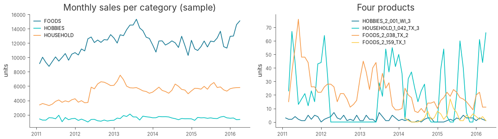
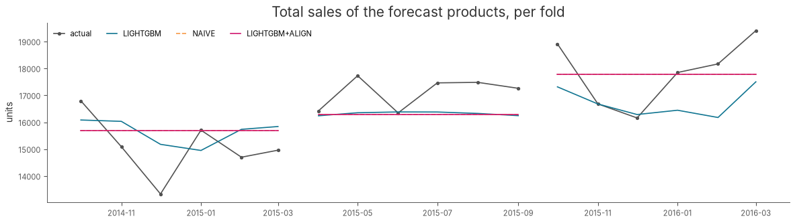

Panel Forecasting: Many Products, One Model#
Author: Anthony Faustine, sambaiga@gmail.com
What you’ll build
A 6-month-ahead forecast for 500 retail products from monthly sales, with one forecaster for all of them:
Panel mode: many series in one long frame, identified by an id column, with windows that never cross series.
A global LightGBM trained across every product, with each window scaled by its own level so small and large products share one model.
M5-style scores: RMSSE per series, revenue- or volume-weighted WRMSSE, and the same score at aggregated levels of the product hierarchy.
Top-down alignment: rescaling product forecasts so they add up to a forecast made on aggregated sales, which removes bias shared across products, and a check of when that pays off.
Prerequisites: Notebooks 01, 05 and 06 (pipeline, ML point forecasting, backtesting).
1. Products are rows, not targets#
Twiga’s multi-target mode models a few columns of one series jointly (for example active and reactive power). Retail demand is different: thousands of products, each a short and noisy series. Fitting one model per product wastes the patterns they share, and most products have too little history to fit anything alone.
Panel mode handles this. Set DataPipelineConfig(id_column=...) and pass a long frame with one row per product and period. Twiga then:
sorts by product and time, and builds windows inside each product only;
keeps the product id on every window, so predictions come back with an
idcolumn;splits backtest folds by date across all products at once, so
backtesting()works unchanged.
The M5 competition (Walmart, 30,490 products) showed that one global model trained across all products beats per-product models. This notebook applies that recipe to monthly data on a 500-product sample.
2. Setup#
from pathlib import Path
from urllib.request import urlretrieve
import warnings
import zipfile
from IPython.display import clear_output
import matplotlib.pyplot as plt
import numpy as np
import pandas as pd
from twiga import TwigaForecaster
from twiga.core.config import DataPipelineConfig, ExperimentConfig
from twiga.core.data import validate_panel
from twiga.core.metrics import fold_stability, hierarchical_scores, panel_point_scores, weighted_panel_score
from twiga.core.plot.matplot_theme import configure_matlib_style
from twiga.core.utils import configure, get_logger
from twiga.hierarchy import aggregate_panel, align_to_level
from twiga.models.baseline.naive_model import NAIVEConfig
from twiga.models.baseline.seasonal_naive_model import SEASONALNAIVEConfig
from twiga.models.ml.lightgbm_model import LIGHTGBMConfig
warnings.filterwarnings("ignore")
configure()
configure_matlib_style(dpi=100) # low resolution keeps the committed notebook small
log = get_logger("tutorials")
COLORS = ["#107591", "#00c0bf", "#f69a48", "#fdcd49", "#525252", "#cf166e"]
2026-10-20 14:40:40 | INFO | twiga.core.plot.matplot_theme | Style configuration warning: 'science' is not a valid package style, path of style file, URL of style file, or library style name (library styles are listed in `style.available`)
3. Data: M5 sales aggregated to months#
The M5 files are public. This cell downloads Nixtla’s mirror once (50 MB, no Kaggle account needed) and caches a monthly sample:
Read the daily unit sales of all 30,490 item-store series.
Keep 500 of them, sampled in proportion within each category and store.
Sum the days into calendar months, keeping only months the data covers in full.
Drop each product’s months before its first sale, when it was not on sale yet.
DATA = Path("../data")
SAMPLE = DATA / "M5-monthly-500.parquet"
TAGS = ["dept_id", "cat_id", "store_id", "state_id"]
def build_sample(n_series: int = 500, seed: int = 0) -> pd.DataFrame:
"""Download the M5 mirror and aggregate a stratified sample of series to calendar months."""
archive = DATA / "m5.zip"
if not archive.exists():
urlretrieve("https://github.com/Nixtla/m5-forecasts/raw/main/datasets/m5.zip", archive) # noqa: S310
with zipfile.ZipFile(archive) as zf:
sales = pd.read_csv(zf.open("sales_train_evaluation.csv"))
calendar = pd.read_csv(zf.open("calendar.csv"), usecols=["date"])
sales = sales.groupby(["cat_id", "store_id"], group_keys=False).sample(
frac=n_series / len(sales), random_state=seed
)
sales.insert(0, "id", sales["item_id"] + "_" + sales["store_id"])
days = [c for c in sales.columns if c.startswith("d_")]
months = pd.to_datetime(calendar["date"].iloc[: len(days)]).dt.to_period("M").to_numpy()
full = [m for m in pd.unique(months) if (months == m).sum() == m.days_in_month]
totals = pd.DataFrame(
{m.to_timestamp(): sales[days].to_numpy()[:, months == m].sum(axis=1) for m in full}, index=sales.index
)
panel = pd.concat([sales[["id", "item_id", *TAGS]], totals], axis=1).melt(
id_vars=["id", "item_id", *TAGS], var_name="timestamp", value_name="sales"
)
panel["timestamp"] = pd.to_datetime(panel["timestamp"])
panel = panel.sort_values(["id", "timestamp"]).reset_index(drop=True)
return panel[panel.groupby("id")["sales"].cumsum() > 0].reset_index(drop=True)
if not SAMPLE.exists():
DATA.mkdir(exist_ok=True)
build_sample().to_parquet(SAMPLE, index=False)
panel = pd.read_parquet(SAMPLE)
panel.head()
| id | item_id | dept_id | cat_id | store_id | state_id | timestamp | sales | |
|---|---|---|---|---|---|---|---|---|
| 0 | FOODS_1_018_CA_4 | FOODS_1_018 | FOODS_1 | FOODS | CA_4 | CA | 2011-02-01 | 39 |
| 1 | FOODS_1_018_CA_4 | FOODS_1_018 | FOODS_1 | FOODS | CA_4 | CA | 2011-03-01 | 113 |
| 2 | FOODS_1_018_CA_4 | FOODS_1_018 | FOODS_1 | FOODS | CA_4 | CA | 2011-04-01 | 72 |
| 3 | FOODS_1_018_CA_4 | FOODS_1_018 | FOODS_1 | FOODS | CA_4 | CA | 2011-05-01 | 41 |
| 4 | FOODS_1_018_CA_4 | FOODS_1_018 | FOODS_1 | FOODS | CA_4 | CA | 2011-06-01 | 32 |
validate_panel summarises the panel before any model sees it: how many series, how long they are, and whether any have gaps or duplicate timestamps. Series shorter than one window (24 months of context plus 6 to forecast) are skipped by the forecaster, so it is worth knowing how many there are.
LOOKBACK, HORIZON = 24, 6
summary = validate_panel(panel, "id", "timestamp", "1MS", min_length=LOOKBACK + HORIZON)
log.info(summary)
2026-10-20 14:40:40 | INFO | twiga.tutorials | n_series=500 n_rows=25147 min_length=8 median_length=59.0 max_length=63 n_short=79 n_irregular=0 n_duplicated=0
fig, axes = plt.subplots(1, 2, figsize=(12, 3.5))
for color, (name, rows) in zip(COLORS, panel.groupby("cat_id"), strict=False):
totals = rows.groupby("timestamp")["sales"].sum()
axes[0].plot(totals.index, totals.to_numpy(), color=color, label=name)
axes[0].set(title="Monthly sales per category (sample)", ylabel="units")
axes[0].legend(frameon=False)
examples = panel["id"].drop_duplicates().sample(4, random_state=1)
for color, product in zip(COLORS[:4], examples, strict=True):
rows = panel[panel["id"] == product]
axes[1].plot(rows["timestamp"], rows["sales"], color=color, label=product)
axes[1].set(title="Four products", ylabel="units")
axes[1].legend(frameon=False, fontsize=8)
fig.tight_layout()

The category totals are smooth and trending, while individual products are noisy, differ by orders of magnitude, and start at different dates. A global model has to cope with all of them at once.
4. Configure the panel#
Four settings turn a single-series pipeline into a panel pipeline:
id_column="id"switches panel mode on.target_scaling="local"divides each window by its own mean absolute sales over the lookback, and multiplies the forecast back. A product selling 5 units a month and one selling 5,000 then look alike to the model. A global scaler would let the large products dominate.local_scale_floor=5.0floors that scale at about one sale a week. Without it, a window whose lookback is nearly all zeros (a launch, an intermittent item) is divided by almost nothing, and its horizon becomes a huge scaled target that the squared-error fit chases.static_featuresadds attributes that do not change over time (department, category, store, state) as model inputs, so the model can learn what is common to a store or category.
data_config = DataPipelineConfig(
target_feature="sales",
period="1MS",
lookback_window_size=LOOKBACK,
forecast_horizon=HORIZON,
id_column="id",
static_features=TAGS,
calendar_features=["month_sin", "month_cos"],
target_scaler="passthrough",
target_scaling="local",
local_scale_floor=5.0,
)
cv_config = ExperimentConfig(
project_name="twiga-tutorials",
split_freq="months",
test_size=HORIZON,
num_splits=3,
window="expanding",
metrics=["mae"],
)
5. Backtest a global model against naive baselines#
Three expanding folds, each forecasting the next 6 months of every product. The models:
LightGBM: one model trained on windows from all 500 products.
Naive (last month repeated) and seasonal naive (same month last year): the floor every model has to beat.
models = [
LIGHTGBMConfig(n_estimators=300, learning_rate=0.05, num_leaves=63),
NAIVEConfig(strategy="window_last"),
SEASONALNAIVEConfig(period=12),
]
forecaster = TwigaForecaster(data_config, models, cv_config)
predictions, _ = forecaster.backtesting(panel[["id", "timestamp", "sales", *TAGS]], verbose=False)
clear_output()
predictions[["Model", "Folds", "id", "timestamp", "Actual", "forecast"]].head()
| Model | Folds | id | timestamp | Actual | forecast | |
|---|---|---|---|---|---|---|
| 0 | LIGHTGBM | 1 | FOODS_1_018_CA_4 | 2014-10-01 00:00:00+00:00 | 224.0 | 153.464456 |
| 1 | LIGHTGBM | 1 | FOODS_1_018_CA_4 | 2014-11-01 00:00:00+00:00 | 123.0 | 157.824849 |
| 2 | LIGHTGBM | 1 | FOODS_1_018_CA_4 | 2014-12-01 00:00:00+00:00 | 167.0 | 151.917161 |
| 3 | LIGHTGBM | 1 | FOODS_1_018_CA_4 | 2015-01-01 00:00:00+00:00 | 153.0 | 126.049747 |
| 4 | LIGHTGBM | 1 | FOODS_1_018_CA_4 | 2015-02-01 00:00:00+00:00 | 141.0 | 126.999857 |
6. Score like M5#
Plain MAE or RMSE across products is dominated by the best sellers, and a percentage error explodes on near-zero months. M5 used two ideas instead, both in twiga.core.metrics:
RMSSE scales each product’s RMSE by the in-sample RMSE of a one-step naive forecast on that product’s own history. Below 1 means better than that naive forecast; every product is on the same footing.
WRMSSE averages RMSSE with weights proportional to each product’s recent sales (M5 used revenue; with prices available, pass
value_column). Products that matter more to the business count more.
Scores are recomputed per fold from the history before that fold’s origin, so nothing leaks from the test months.
per_series = panel_point_scores(predictions, panel, "id", "sales", weight_window=12)
bottom = weighted_panel_score(per_series).rename("wrmsse").reset_index()
fold_stability(bottom, "wrmsse").round(3)
| mean | std | n_folds | |
|---|---|---|---|
| Model | |||
| LIGHTGBM | 0.969 | 0.036 | 3 |
| NAIVE | 1.030 | 0.038 | 3 |
| SEASONAL_NAIVE | 1.284 | 0.040 | 3 |
Scores at aggregated levels#
A retailer plans stores and departments as well as products. hierarchical_scores sums the product forecasts and actuals up each level of the hierarchy and scores them there. The M5 score was the mean over 12 such levels; here are five.
LEVELS = {
"1 total": [],
"3 store": ["store_id"],
"4 category": ["cat_id"],
"9 store-department": ["store_id", "dept_id"],
"12 item-store": ["id"],
}
tags = panel[["id", "item_id", *TAGS]].drop_duplicates("id")
def level_scores(frame: pd.DataFrame) -> pd.DataFrame:
"""WRMSSE per hierarchy level and model, mean over folds."""
scores = hierarchical_scores(frame, panel, tags, LEVELS, "id", "sales", weight_window=12)
table = scores.groupby(["level", "Model"])["wrmsse"].mean().unstack("Model")
return table.loc[sorted(table.index, key=lambda name: int(name.split()[0]))]
level_scores(predictions).round(3)
| Model | LIGHTGBM | NAIVE | SEASONAL_NAIVE |
|---|---|---|---|
| level | |||
| 1 total | 1.101 | 1.063 | 1.361 |
| 3 store | 0.984 | 1.177 | 1.312 |
| 4 category | 1.038 | 1.046 | 1.199 |
| 9 store-department | 0.984 | 1.042 | 1.266 |
| 12 item-store | 0.969 | 1.030 | 1.284 |
LightGBM is the best model at the product level and at most aggregated levels, but not at the total, where it falls behind naive. Errors that are independent across products cancel when products are summed; errors that share a sign do not. The bias of the summed forecast shows which kind LightGBM makes:
totals = predictions.groupby(["Model", "Folds"])[["forecast", "Actual"]].sum()
(100 * (totals["forecast"] / totals["Actual"] - 1)).unstack("Folds").round(1).add_prefix("bias % fold ")
| Folds | bias % fold 1 | bias % fold 2 | bias % fold 3 |
|---|---|---|---|
| Model | |||
| LIGHTGBM | 3.6 | -4.7 | -6.3 |
| NAIVE | 4.0 | -4.8 | -0.5 |
| SEASONAL_NAIVE | 12.5 | 3.4 | -3.3 |
Each window is scaled by its own recent level and no input carries the trend, so when sales move the model misses the move for every product a little, in the same direction. On all 30,490 series this shared bias made LightGBM the worst non-seasonal model at every aggregated level, despite being the best at the product level.
7. Align product forecasts to an aggregated forecast#
The 2nd and 5th M5 entries fixed this shared bias top-down:
Sum the products to a level.
Forecast that small, smooth panel directly.
Rescale each product’s forecast so each group sums to the level forecast.
Each product keeps its share of its group; the group’s level and trend come from the aggregate forecast. aggregate_panel does step 1 and align_to_level step 3. Pick the level where the reference forecast beats the summed product forecasts. On this sample that is the total, so the reference is a naive forecast of total sales.
The level forecast must cover exactly the products that have product forecasts in each fold. That set grows across folds as products become long enough for a window, so the level backtest runs once per fold.
LEVEL = [] # the grand total; ["store_id", "dept_id"] would align each store-department
level_config = data_config.model_copy(update={"id_column": "series", "static_features": None})
reference = []
for fold, rows in predictions.groupby("Folds"):
subset = panel[panel["id"].isin(rows["id"].unique())]
aggregated = aggregate_panel(subset, LEVEL, ["sales"], id_column="id", key_column="series")
level_forecaster = TwigaForecaster(level_config, [NAIVEConfig(strategy="window_last")], cv_config)
level_predictions, _ = level_forecaster.backtesting(aggregated[["series", "timestamp", "sales"]], verbose=False)
reference.append(level_predictions[level_predictions["Folds"] == fold])
reference = pd.concat(reference, ignore_index=True)[["series", "timestamp", "forecast", "Folds"]]
aligned = align_to_level(
predictions[predictions["Model"] == "LIGHTGBM"],
reference,
LEVEL,
id_column="id",
tags=tags,
group_columns=["Folds"],
)
aligned = aligned[predictions.columns].assign(Model="LIGHTGBM+ALIGN")
clear_output()
level_scores(pd.concat([predictions, aligned], ignore_index=True)).round(3)
| Model | LIGHTGBM | LIGHTGBM+ALIGN | NAIVE | SEASONAL_NAIVE |
|---|---|---|---|---|
| level | ||||
| 1 total | 1.101 | 1.063 | 1.063 | 1.361 |
| 3 store | 0.984 | 1.017 | 1.177 | 1.312 |
| 4 category | 1.038 | 1.053 | 1.046 | 1.199 |
| 9 store-department | 0.984 | 1.008 | 1.042 | 1.266 |
| 12 item-store | 0.969 | 0.978 | 1.030 | 1.284 |
Alignment does what it promises at the level it targets: the aligned LightGBM matches naive exactly at the total. Below the total it costs accuracy on this sample. The naive reference is only slightly better than the summed LightGBM forecast (1.063 against 1.101), and it pushes its own fold errors, such as the 4% over-forecast in fold 1, down to every product. Averaged over the five levels, alignment does not pay here (1.024 against 1.015).
It pays when the reference is clearly better than the summed product forecasts. On all 30,490 series, LightGBM scored 1.311 at the total against 1.014 for naive. There, aligning it to a Chronos-2 forecast of the 70 store-department series brought the 12-level M5 score from 1.178 to 0.992, against 1.077 for naive. In both cases, choose the level and the reference model on backtest folds, as done here, before trusting them.
fig, ax = plt.subplots(figsize=(12, 3.5))
styles = {"LIGHTGBM": (COLORS[0], "-"), "NAIVE": (COLORS[2], "--"), "LIGHTGBM+ALIGN": (COLORS[5], "-")}
combined = pd.concat([predictions, aligned], ignore_index=True)
for fold, fold_rows in combined[combined["Model"] == "LIGHTGBM"].groupby("Folds"):
actual = fold_rows.groupby("timestamp")["Actual"].sum()
ax.plot(
actual.index,
actual.to_numpy(),
color=COLORS[4],
marker="o",
markersize=3,
label="actual" if fold == 1 else None,
)
for name, (color, style) in styles.items():
for fold, fold_rows in combined[combined["Model"] == name].groupby("Folds"):
totals = fold_rows.groupby("timestamp")["forecast"].sum()
ax.plot(totals.index, totals.to_numpy(), color=color, linestyle=style, label=name if fold == 1 else None)
ax.set(title="Total sales of the forecast products, per fold", ylabel="units")
ax.legend(frameon=False, ncols=4)
fig.tight_layout()

The aligned forecast follows the naive total exactly (the dashed naive line sits under it), while each product inside keeps LightGBM’s share. In fold 3, sales rose and LightGBM’s summed forecast stayed below them: the shared under-forecast from section 6. Alignment fixes that fold but inherits naive’s flat forecast in the other two, which is why it does not pay on this sample.
8. Summary#
Step |
Twiga API |
|---|---|
Long frame of many series |
|
Products of any size in one model |
|
Shared product attributes |
|
Rolling-origin folds across all products |
|
Scale-free, weighted scores |
|
Scores up the hierarchy |
|
Remove shared bias |
|
Where to go next
Count losses for intermittent demand:
LIGHTGBMConfig(objective="tweedie"), or the Poisson and negative-binomial heads on the neural models.Separate models per store or category:
twiga.forecaster.PooledForecaster, blended withaverage_prediction_frames.Zero-shot forecasts of the aggregated levels: Chronos-2 (notebook 18) as the alignment reference.
The hierarchy and panel-metrics guides in the documentation, with the full 30,490-series results.